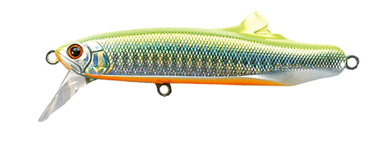
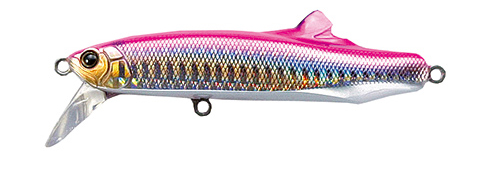
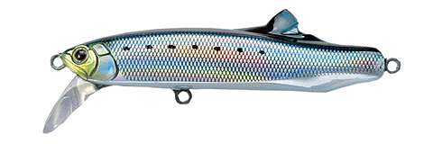
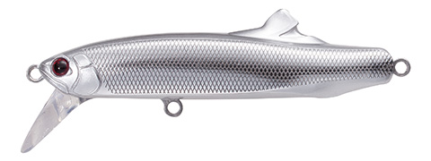

コンタクト フリッツ
（CONTACT FLITZ.）
コンタクト フリッツ（CONTACT FLITZ.）はTACKLE HOUSE（タックルハウス）のヘビーシンキングミノーです。
遠くのナブラも狙い打てる、タックルハウスのヘビーシンキングミノーです。
2004年に登場したFLITZ.42から始まったシリーズで、今は24g〜75gの5サイズ。貫通ワイヤーとスーパーハードコーティングの頑丈なボディで、シイラ・カツオ・青物からマグロまで対応し、最近はサワラ狙いでも注目されています。

画像出典:TACKLE HOUSE公式HP
スペック
- メーカー
- TACKLE HOUSE（タックルハウス）
- タイプ
- ヘビーシンキングミノー（固定ウェイト）
- サイズ
- 24g・28g（80mm）／42g（90mm）／60g（108mm）／75g（120mm）
- フック
- 24・28：ST-56#4／42：ST66#2／60・75：別売（推奨 ST66 #1・#1/0）
- 構造
- 3Dレーザーカット貫通ワイヤー・スーパーハードコーティング・スタビライザーフィン
- ターゲット
- 青物・サワラ・シイラ・カツオ・マグロ・シーバス・ヒラメ
- 価格
- 2,100円（24・28）／2,200円（42）／2,250円（60）／2,300円（75）（メーカー表記）
▼今すぐチェック

コンタクト フリッツの特徴
飛距離と頑丈さを両立した、貫通ワイヤーのヘビーシンキングミノー
-
ミノーを凌ぐ飛距離で遠くのナブラへ
固定ウェイトのヘビーシンキングボディで、通常のミノーを凌駕する飛距離が出る。沖で起きたナブラにも届きやすい。
-
水平フォールとタイトウォブリング
ボディサイドの平面とタイトなウォブリングでフラッシング効果が高い。水平姿勢でフォールするので、着水直後からアピールできる。
-
大型魚にも負けないヘビーデューティー仕様
3Dレーザーカット貫通ワイヤー（75・60・42は1.2mm厚、28・24は1mm厚）とスーパーハードコーティングで、フック傷や鋭い歯にも強い。
コンタクト フリッツの使い方
基本はキャストして狙うレンジまで沈め、ただ巻きで引いてくるだけでOK。タイトなウォブリングとフラッシングで誘います。
ナブラにはすぐ投げて表層を速巻き、沈んだ魚にはカウントダウンしてから巻くのが基本。60・75はハイギヤリールでの速巻きにも対応しています。
コンタクト フリッツの得意な状況
ショアからの青物・サワラ狙いには24・28、オフショアや大型の青物には42〜75と、サイズで幅広い釣りに対応します。
24は低速域のアクションも良く、シーバスやヒラメにも使えます。
ワンポイント
60と75はフックが付いていない（別売）ので、推奨のST66 #1・#1/0を付けて使いましょう。サワラ狙いでは、歯でラインを切られないようリーダーを太めにしておくと安心です。
フリッツのサイズの使い分け
| モデル | 全長・重さ | フック | こんな時に |
|---|---|---|---|
| FLITZ.24 | 80mm・24g | ST-56#4 | シーバス・ヒラメ、低速で引きたい時 |
| FLITZ.28 | 80mm・28g | ST-56#4 | ショア青物・サワラの基本サイズ |
| FLITZ.42 | 90mm・42g | ST66#2 | シリーズの原点。シイラ・カツオ・青物・サワラ |
| FLITZ.60 | 108mm・60g | 別売（ST66 #1推奨） | ショアからの大型青物、オフショア |
| FLITZ.75 | 120mm・75g | 別売（ST66 #1/0推奨） | ツナのキャスティングゲームまで |
※数値は公式ページより。
オススメカラー
フリッツは定番カラーに加え、28には「湾奥サワラ」などのサワラ用カラーもあります。そのうち4色を紹介します（画像は公式より）。

02. チャートバック・オレンジベリーチャートの背とオレンジのお腹で目立つアピール系。朝夕マズメや濁り潮に。

03. ピンクバック青物・サワラの定番ピンクバック。まず1つ選ぶならこの色。

07. イワシイワシを意識したナチュラル系。澄み潮の日中に。

22. メッキシルバー強いフラッシングで遠くの魚にアピールできるメッキ系。晴れた日の日中に。
画像出典:TACKLE HOUSE公式HP
コンタクト フリッツに似ているルアー
-
 ピンテール サゴシチューン
ジャクソン
詳細はこちら＞
ピンテール サゴシチューン
ジャクソン
詳細はこちら＞
業界初のサゴシ専用設計のミノー。不意の平打ちでリアクションを誘う。
-
 Gコントロール
ジャクソン
詳細はこちら＞
Gコントロール
ジャクソン
詳細はこちら＞
20g・28g・40gのヘビーシンキングミノー。ゆっくり巻いても泳ぐ。
-
 ステップマジック120S
アクアウェーブ
詳細はこちら＞
ステップマジック120S
アクアウェーブ
詳細はこちら＞
ダートで呼んでストップで食わせる、サワラ用の120mmシンキングミノー。